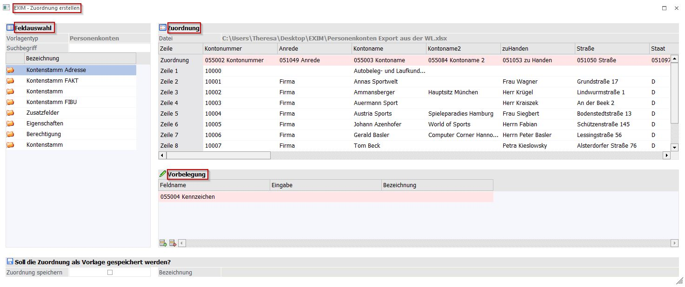
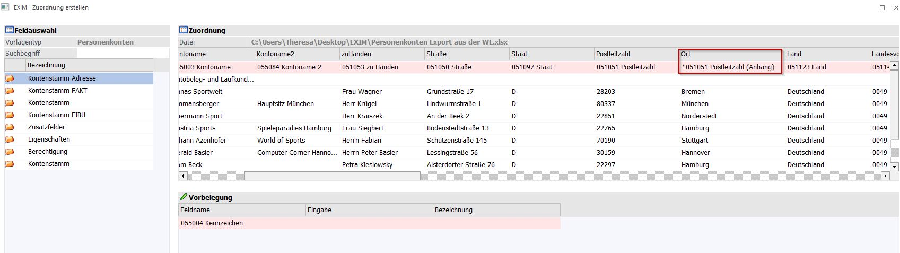
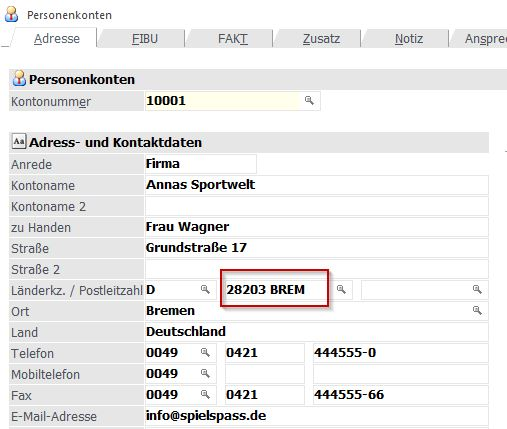

Wird das Import-Auswahlfenster nach der Bearbeitung mit "OK" bestätigt, wird automatisch geprüft, ob die Angaben korrekt sind. Nach der erfolgreichen Prüfung öffnet sich das Fenster "EXIM Zuordnung erstellen", in welchem nun weitere Arbeiten durchgeführt werden können.

Ø Feldauswahl
Aus der "Feldauswahl" können Felder in die Vorbelegung via Drag & Drop verschoben werden.
Ø Zuordnung
Im Bereich der "Zuordnung" können Importwerte zusammengesetzt werden. Ist ein Stammdatenfeld bereits zugeordnet, kann beim "Drag" durch gleichzeitiges drücken von "Ctrl"/"Strg" ein Feld in ein bereits vorhandenes Feld als Anhang gegeben werden. Erkennbar ist diese Nutzung am davor gestellten "*".

Die zusammengeführten Felder werden durch Leerzeichen getrennt nach dem Import dargestellt.

Ø Vorbelegung
Das gefundene Key-Feld muss nicht zugeordnet werden. Es ist auch nicht erforderlich, dass dieses an der ersten Stelle steht. Es wird aber immer an der ersten Stelle dargestellt. Intern wird die eigentliche Stelle für temporäre Vorlagen als Information im Feld "EXIM-Position" in der T390CMP Feld C025 mitgeführt (bei gespeicherten Vorlagen ist der Wert = 0).
Ø "Soll die Zuordnung als Vorlage gespeichert werden?"
Wird diese Checkbox angehakt, kann eine Bezeichnung für die Vorlage hinterlegt werden. Allerdings nur, wenn der Key ab erster Stelle steht. Nach dem durchgeführten Import befindet sich die erstelle Vorlage im Programm Start / Vorlagen Anlage / Export-/ Import-Vorlagen.
Button
Ø Erste Zeile enthält Feldnamen
Der Button "Erste Zeile enthält Feldnamen" in der Ribbonleiste wird automatisch vom Programm entsprechend der hinterlegten Excel-Importdatei vorbelegt. Ist der Button als aktiv (farblich hinterlegt), wurde eine Überschriftenzeile gefunden. Wurde keine Überschriftenzeile ermittelt, ist der Button entsprechend nicht aktiviert. Der Button kann unabhängig von der Programmlogik manuell aktiviert bzw. deaktiviert werden.
Bei einer gefundenen Überschriftenzeile wird diese in der "Zeile" im Bereich "Zuordnung" als Vorschlag ausgewiesen. Die Empfehlungen vom Programm können editiert werden.